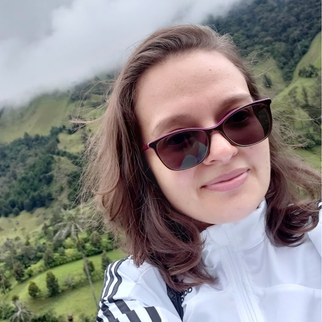
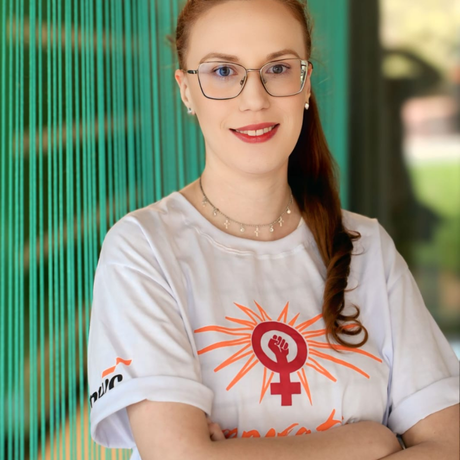

Conselho DiretorLina Garcés
Coordenadora do GRACE
Professora do ICMC-USP.
Leo Sampaio Ferraz Ribeiro
Vice-Coordenadora GRACE
Professora no ICMC-USP.
Brena Marques Ribeiro
Liderança de Ensino
Engenheira Eletricista e mestranda em Engenharia de Software.

EnsinoMyriam Liston Ferreira Perdiza
IFSP-São Carlos
Formada em Gestão de TI, estudante de especialização Lato Sensu em Educação: Ciência, Tecnologia e Sociedade.
Davi Andrade Laet
Monitor do GRACE
Graduando de Engenharia Elétrica - ICMC-USP, faço parte da linha de frente de ensino GRACE incentivando as alunas a seguirem nas ciências exatas.
João Antônio Misson Milhorim
Monitor GRACE
Mestrando em Ciências da Computação no ICMC-USP.
Daniele Paulino
Embaixadora da Technovation Girls
Engenheira Estrutural pela TYLin e Doutora em Engenharia Arquitetônica pela Penn State University.
Isadora Ferrão
Embaixadora do Technovation Girls
Pós-doutoranda Occidentale.
Rebeca Maia Pontes
Co-líder Eventos GRACE
Mestranda em Ciência da Computação no ICMC-USP.
Marine Golfetto
Líder do Marketing
Especialista em Computação Aplicada à Educação-USP.
Thaís Ribeiro Lauriano
Membro GRACE
Graduanda em Ciências de Comunicação no ICMC-USP.
Gabriela Marculino
Desenvolvedora Web do GRACE
Graduanda em Ciência da Computação pela UEMS, ex-monitora (TS 2024) e atualmente Desenvolvedora Web do GRACE.